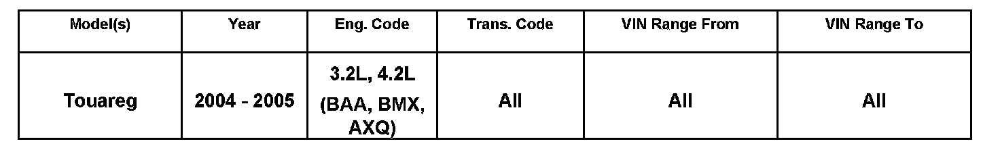
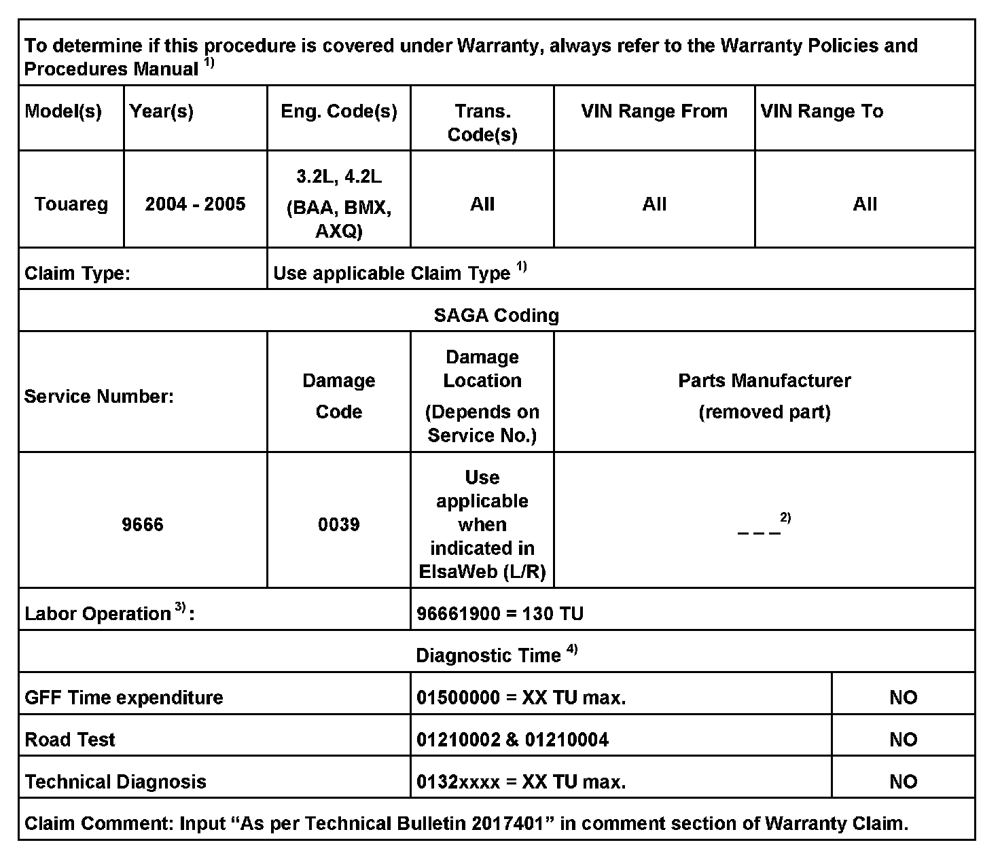
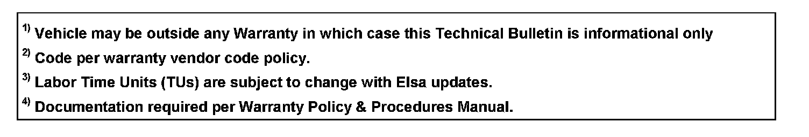
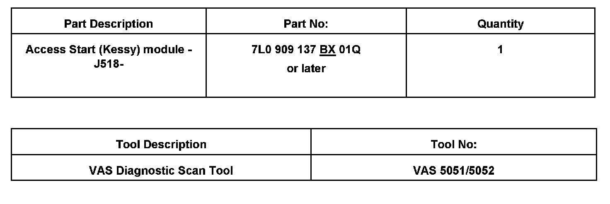

Keyless Starting System - 'Several Keys Found' Message
57 08 04Mar. 6, 2008
2017401

Vehicle Information
"Several Key's Found" Message Displayed on Instrument Cluster
"Several Key's Found" message displayed on instrument cluster after Access Start (Kessy) Module -J518- is replaced.
Technical Background
Note:
No technical problem exists.
This programming feature is found in European vehicles when both keys are in the vehicle at the same time.
This feature was not meant for the North American market, but a limited amount of modules were programmed with this feature.
Production Solution
No Production Change Required.
Service
This feature was programmed on Access Start (Kessy) module -J518- Part No. 7L0 909 137 AX 01Q.
To correct, replace Access Start (Kessy) module -J518- with Part No. 7L0 909 137 BX 01Q or later.
Warranty


Note:
This is only a warrantable matter if a customer complaint is involved.

Required Parts and Tools
Additional Information
All part and service references provided in this Technical Bulletin are subject to change and/or removal.
Always check with your Parts Dept. and Repair Manuals for the latest information.